The Watcher — an eye watching through a keyhole. A complete logo package: vector symbol, three lockups, favicons and app icons, in both colour versions.
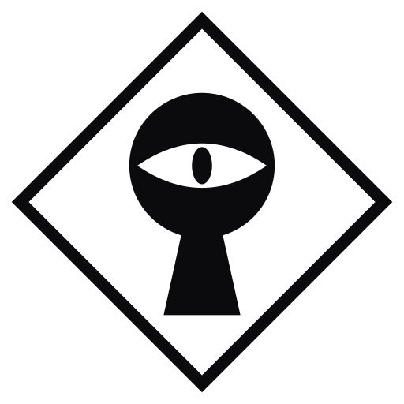
Pure geometry — scales to any size with no quality loss. The master artwork; everything else derives from it. Drop the diamond frame for ultra-tight crops if needed.
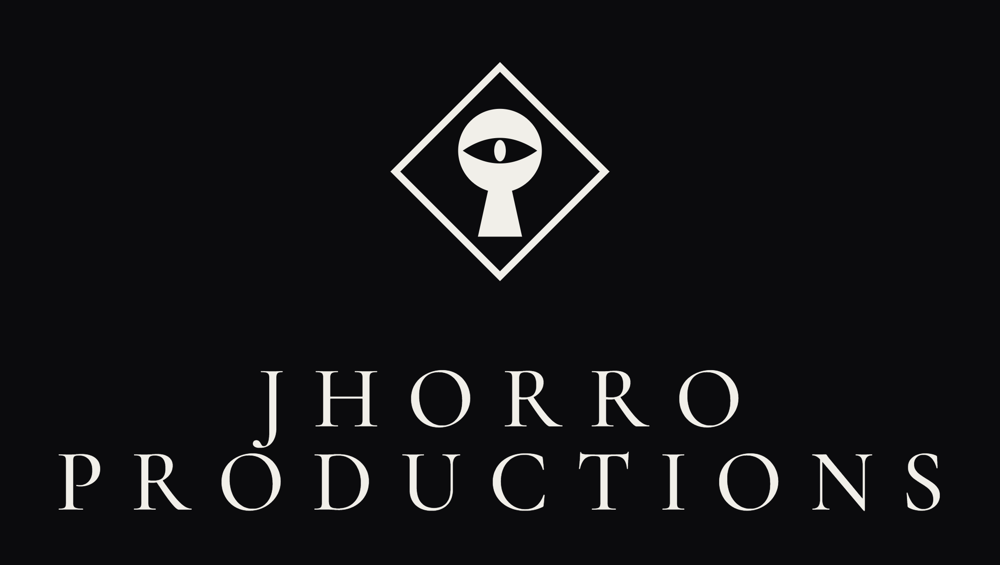
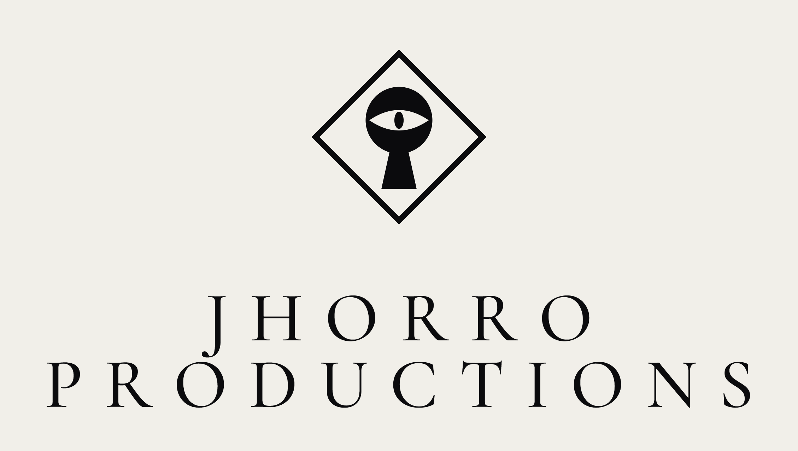
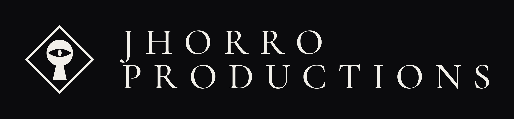
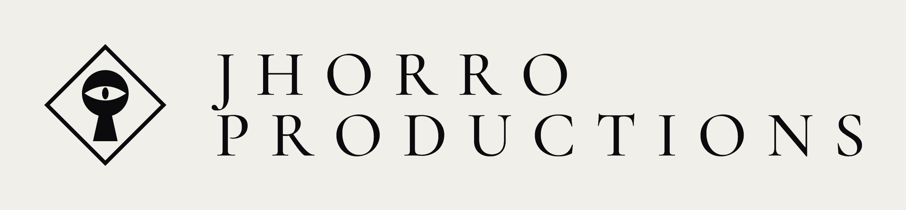
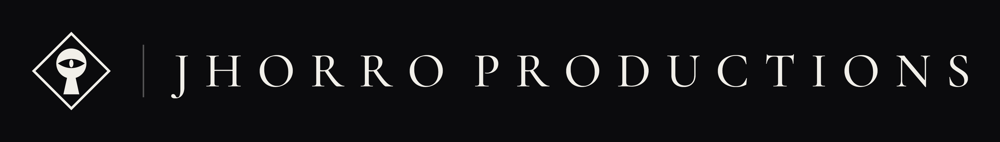
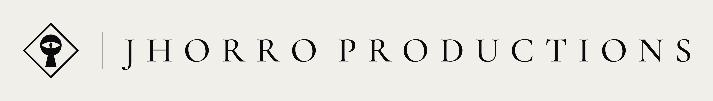
Each lockup ships in dark and light, plus a -transparent.png version (no background) for placing over imagery. Wordmark set in Cormorant Garamond, equal tracking on both words.
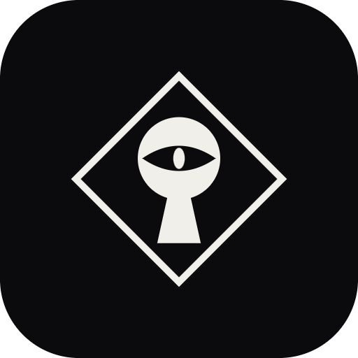
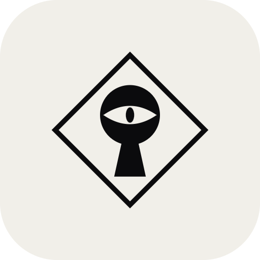
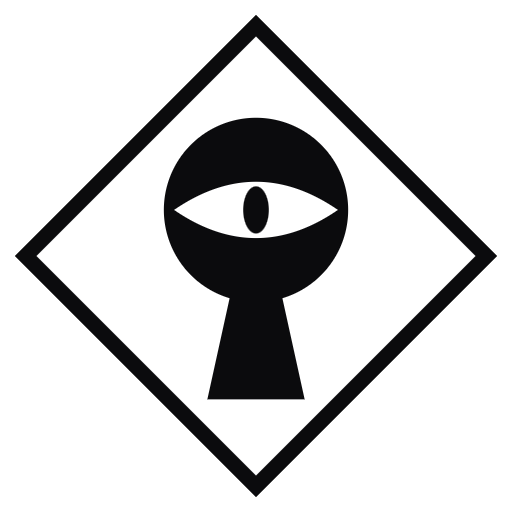
App icons (rounded square, padded) at 512 / 180 / 64 / 32 px. Favicons (full-bleed, transparent) at 512 / 64 / 32 / 16 px. The mark holds its read down to 16px.